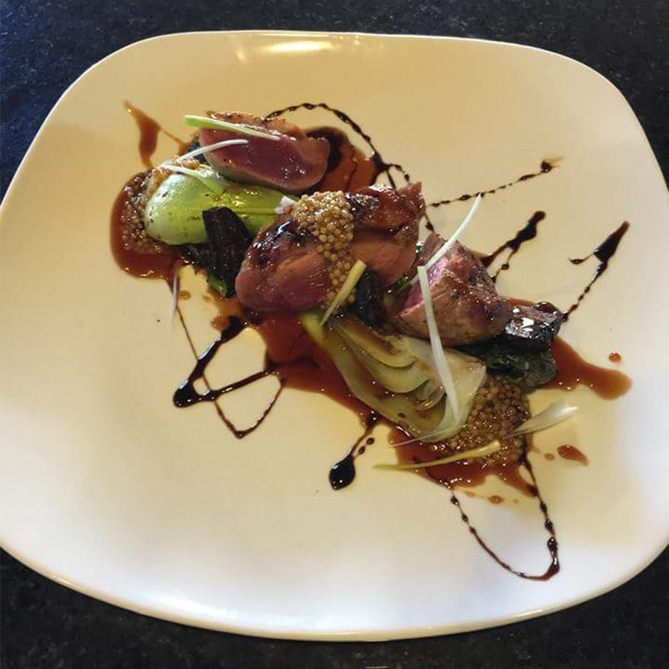
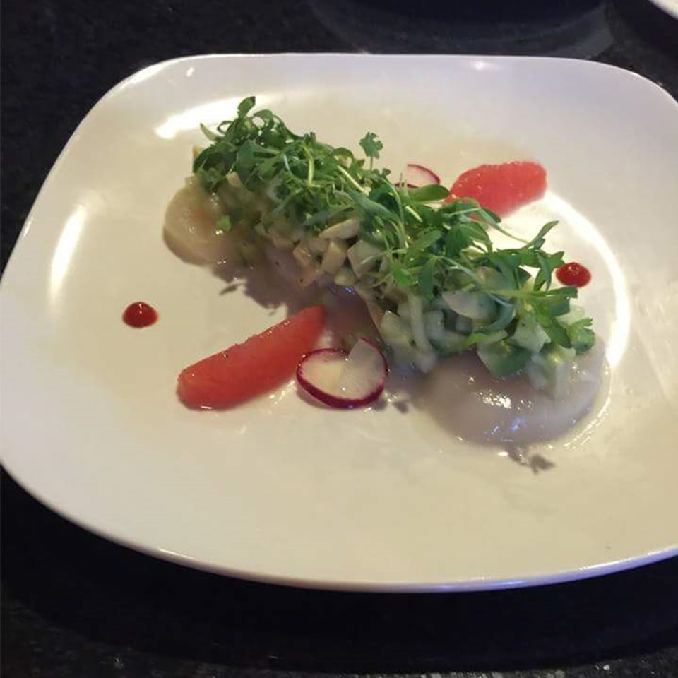
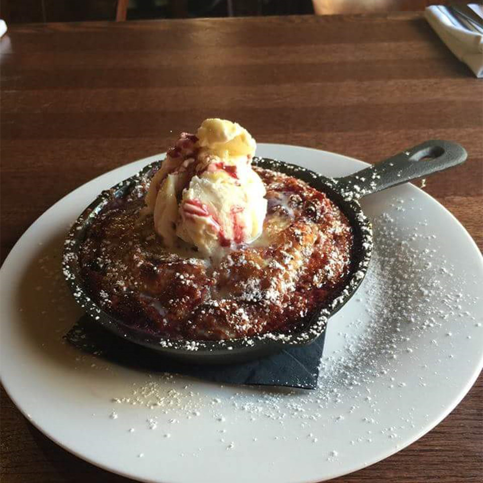
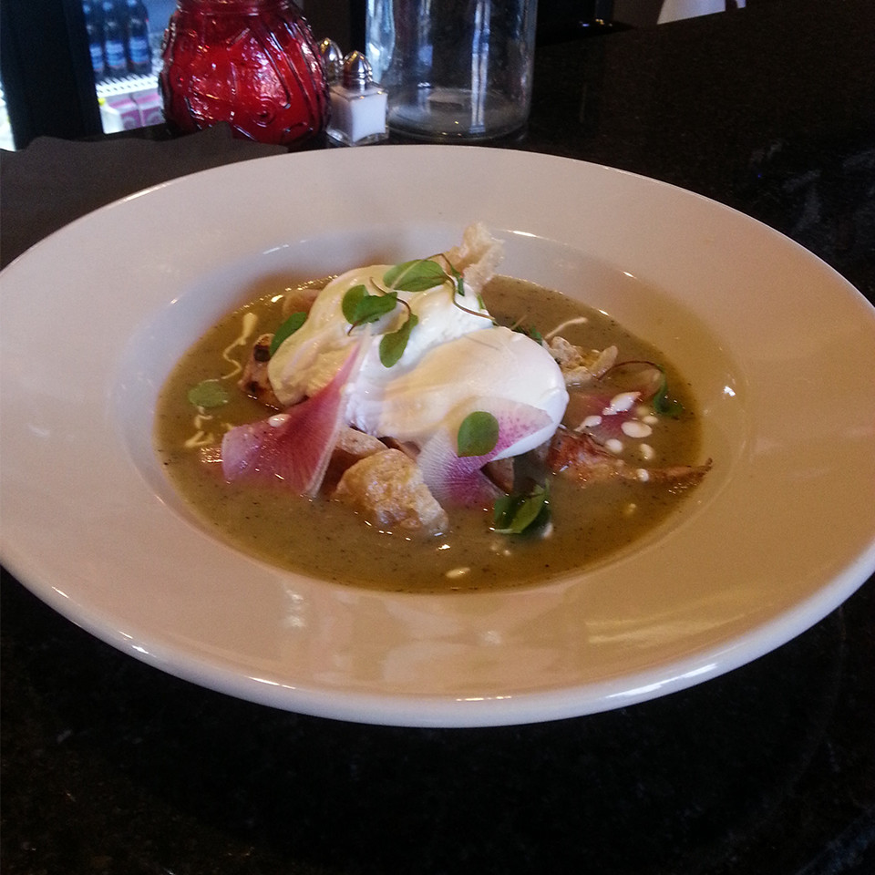

Welcome to Ajó Restaurant
Ajó restaurant is a family owned and operated business
Bringing fresh farm ingredients to your table while emphasizing on quality and flavor.
Lunch Monday-Friday 11-3
Brunch Saturday and Sunday 11-3
Dinner Sunday - Thursday 3-10
Dinner Friday-Saturday 3-11
Trying to bring a downtown Austin feel up north where it is quickly growing.



